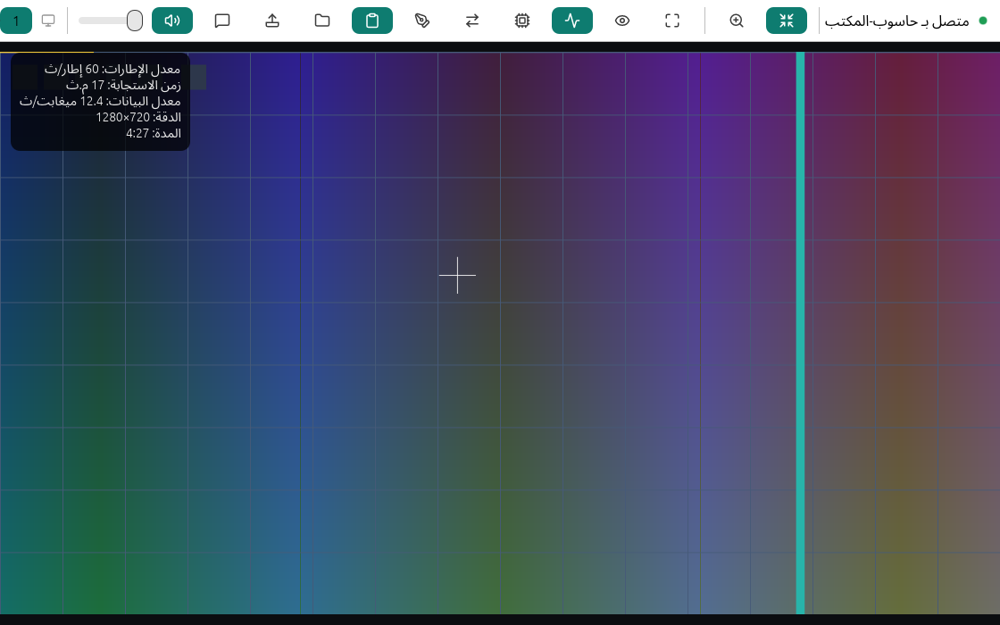
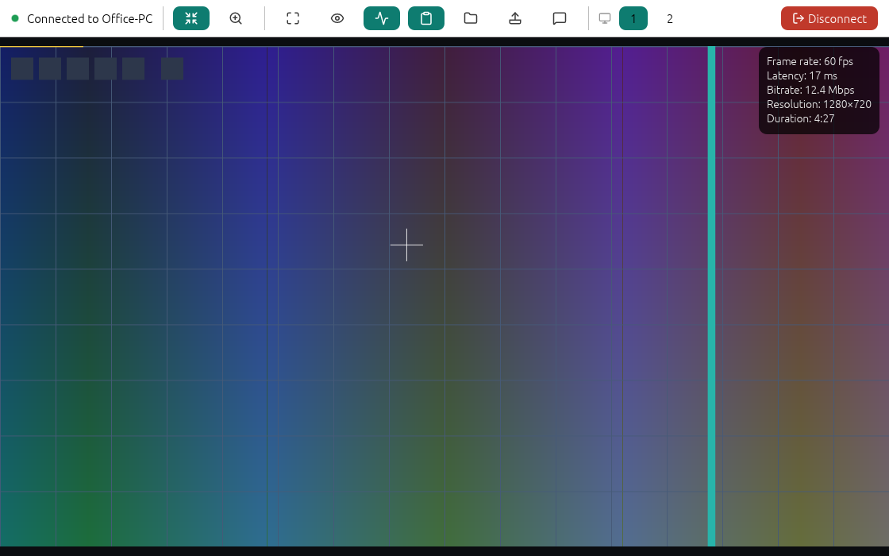

ما الذي تحصل عليه
تطبيق صغير واحد هو الحاسوب المتحكَّم به (المضيف) والحاسوب المتحكِّم (العارض) في آنٍ واحد.
دون إنترنت وعلى الشبكة المحلية فقط
تجد الأجهزة بعضها تلقائيًا على شبكتك، أو تكتب المعرّف أو عنوان IP. وافتراضيًا لا يتصل إلا العناوين الخاصة وعناوين الارتباط المحلي.
مشفَّر وموثَّق
تستخدم كل جلسة QUIC مع TLS 1.3. ومعرّف الجهاز المكوّن من 9 أرقام مشتق من مفتاحه، فالاتصال بالمعرّف يثبّت هوية الجهاز. وإذا تغيّر المفتاح ظهر تحذير واضح.
أنت من يقرر من يدخل
اضغط قبول على المضيف، أو أدخل رمزًا من 6 أرقام لمرة واحدة، أو استخدم كلمة مرور دائمة للوصول غير المراقَب. لا تنتقل كلمات المرور عبر الشبكة، وتُحدَّد محاولات الإدخال.
فيديو سلس
نحو 60 إطارًا في الثانية بترميز H.264. وإذا تأخرت الشبكة تُسقَط الإطارات بدل أن تتراكم، فلا يزداد التأخير.
تحكّم كامل
الفأرة والعجلة ولوحة المفاتيح، بما فيها Win وAlt+Tab ومفاتيح تبديل اللغة. بدّل بين شاشات المضيف مباشرة. والأولوية دائمًا للشخص الجالس أمام المضيف.
ملفات وحافظة ومحادثة وصوت
نقل سريع للملفات مع مستعرض للملفات البعيدة، ومزامنة الحافظة للنصوص والصور والملفات، ومحادثة، وصوت الحاسوب البعيد.
وصول غير مراقَب
تُبقي خدمة Windows الاختيارية الحاسوب في المتناول عند شاشة القفل وشاشة تسجيل الدخول، وتعيد الاتصال بعد إعادة التشغيل.
الخصوصية والأدوات
وضع الخصوصية يُظلم شاشة المضيف أثناء الجلسة. ارسم على الشاشة، ووجّه منفذًا، وأيقظ حاسوبًا نائمًا، وراجع سجل الاتصالات.
العربية أولًا
الواجهة كلها متاحة بالعربية بتخطيط معكوس من اليمين إلى اليسار، وحروف متصلة، وترتيب صحيح للنص المختلط بين العربية والإنجليزية، وأرقام هندية، وحقول نص عربية تتصرف كما ينبغي أثناء الكتابة.
اتصل في ثلاث خطوات
- على الحاسوب الذي تريد التحكم به، افتح TLP-Desk ودوّن معرّف الجهاز والرمز لمرة واحدة.
- على حاسوبك، اختره من الأجهزة على هذه الشبكة، أو اكتب معرّفه أو عنوان IP.
- أدخل الرمز، أو اتركه فارغًا واضغط قبول على الحاسوب الآخر. وها أنت متصل.
الإنجليزية والعربية جنبًا إلى جنب
الجلسة نفسها باللغتين: ينعكس الشريط والعناصر العائمة في العربية.


التنزيل
نزّل أحدث إصدار من صفحة الإصدارات على GitHub:
TLP-Desk-<الإصدار>-setup.exe: مثبِّت (بالعربية والإنجليزية) يضيف أيضًا قواعد جدار حماية Windows للشبكات الخاصة فقط.TLP-Desk-<الإصدار>-win-x64-portable.zip: نسخة محمولة بلا تثبيت؛ فُكَّ الضغط وشغّلTLP-Desk.exe.SHA256SUMS.txt: بصمات للتحقق من سلامة ما نزّلته.
يتطلب Windows 10 (الإصدار 2004 أو أحدث) أو Windows 11 بمعمارية x64. المثبِّت غير موقَّع رقميًا بعد، لذا قد يحذّرك SmartScreen: اختر مزيد من المعلومات ثم تشغيل على أي حال. شغّل TLP-Desk على الحاسوبين واضبط الشبكة على خاصة في Windows.
اعرف المزيد
دليل المستخدم
التثبيت والاتصال والتحكم والإعدادات وحل المشكلات والأسئلة الشائعة. In English
نموذج الأمان
نموذج التهديدات، والهوية والتثبيت، والقيود المعروفة، مذكورة بصراحة.
الشيفرة المصدرية
برخصة MIT أو Apache-2.0 بحسب اختيارك. المساهمات وبلاغات الأخطاء مرحَّب بها.